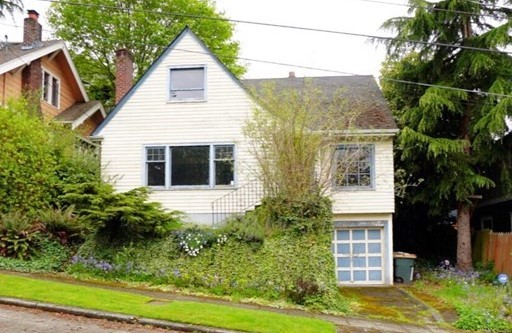
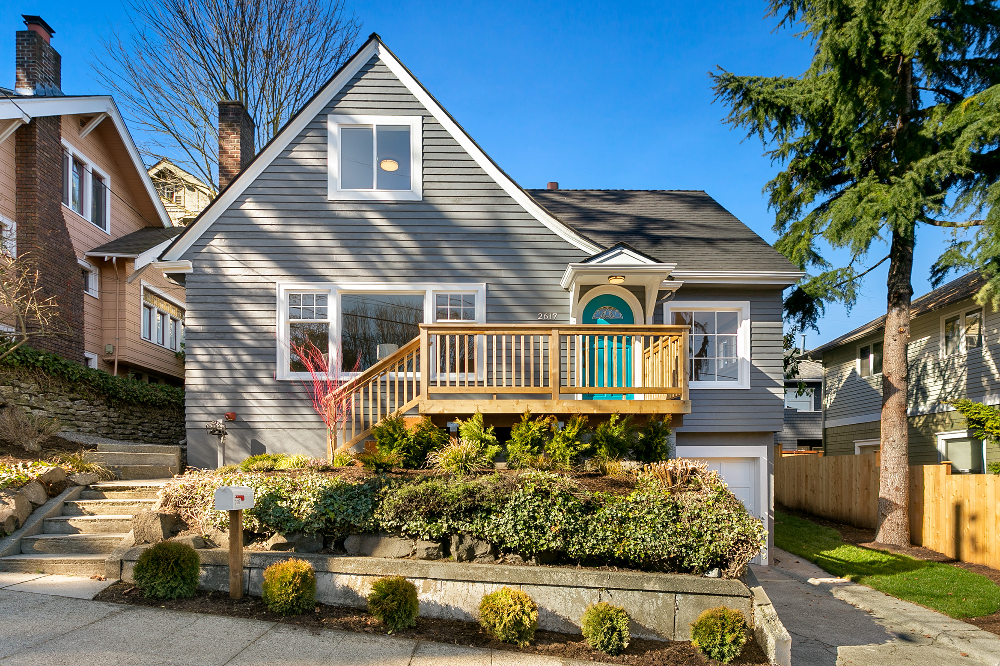
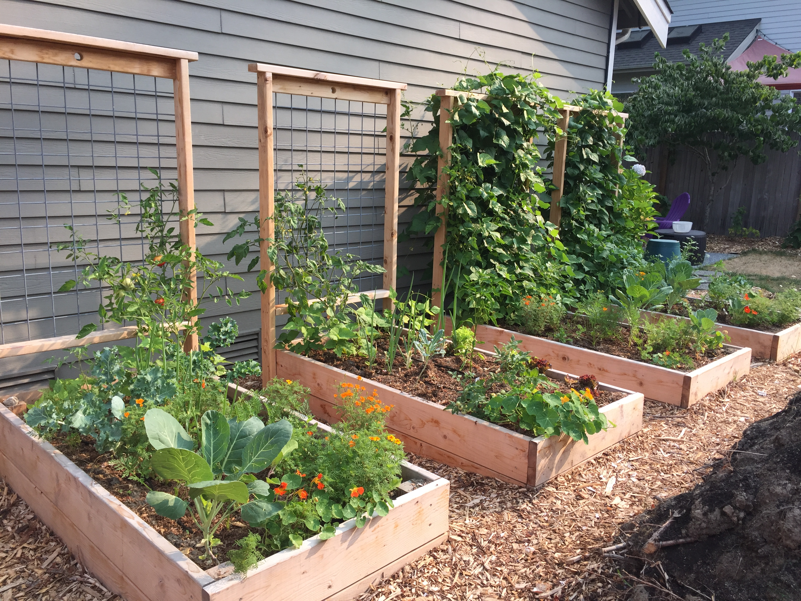
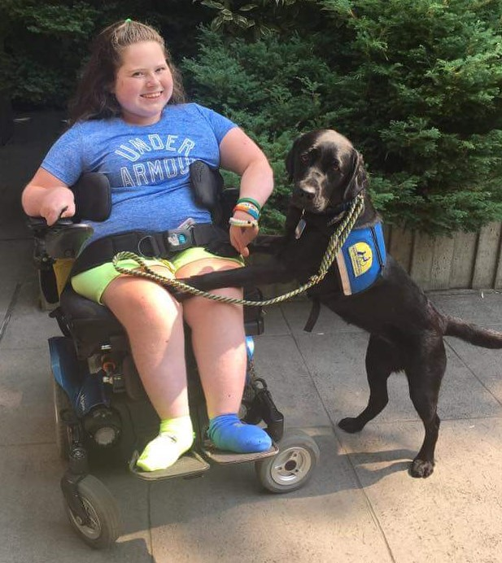

Bernice Carbaugh
Finance systems professional and aspiring software developerProjects
- Portfolio GitHub code GitHub page
- My First Web Site GitHub code GitHub page
- Calculator to practice Javascript Github code
- Bootstrapped Wikipedia (GitHub code) GitHub code GitHub page
- Cookie Recipe to practice indentation and HTML tags Github code
Work Experience
- Front-end web development - HTML, CSS, Javascript
- Object oriented programming C# / .NET
- React, jQuery, Bootstrap
- Back-end development
- Identified needs, reviewed existing systems, formulated and implemented solutions, and provided user training and documentation.
- Created desktop solutions (using Excel, Access, VBA and SQL Server) to facilitate data entry, extraction, storage and retrieval, automate journal entries, improve reporting and auditing capabilities and streamline reconciliations.
Collaborated with users and developers to create, test and improve an enterprise-wide data warehouse system in DB2 and Teradata
- Created requirements, tested data quality and workflow integrity
- Mediated between developers, users and stakeholders, troubleshot production issues
- Spearheaded creation of specialized data marts
- Performed analysis using SQL queries, advanced Excel tools and Business Objects
- Brought an innovative, patented paper punch to market by inventing it, assessing market and manufacturing feasibility, creating prototypes, sourcing vendors and establishing production methods.
- Promoted the product to wholesalers and consumers through print advertising, commerce-enabled website, trade shows and in-store demonstrations.
- Developed processes to handle customer service, order fulfillment and accounting operations.
- Projects included automating payment processing through an internal lockbox services provider, creating a system to handle electronic funds transfer, and building interfaces between the leasing system and other systems such as the loan tracking, sales tax, personal property tax and general ledger applications.
- Defined project issues and scope, formulated and performed testing plans, collaborated with stakeholders, wrote scripts and macros, developed models and interfaces, and provided user training.
- Managed nightly and month-end processing, security, report writing, hardware and software upgrades, business continuation planning and all user requests and questions.
- Analysis included revenue forecasting and tracking, manufacturing costs, excess inventory and operating expense budgeting.
- Provided financial information, analysis and tools to manage business.
- Made significant contributions to developing and refining systems and reports to enable critical business processes, such as forecasting, revenue reporting and inventory analysis.
- Conducted peer and user training on productivity-enhancing skills and new systems.
- Led audit engagements, taking full responsibility during the planning, performing and reporting stages.
- Supervised professional staff and facilitated client and audit team communication.
- Coordinated appropriate work reviews and resolutions of significant issues.
- Summarized and concluded on audit results.
Beyond Coding
I grew up going to construction sites and open houses, and to this day, I'm addicted to houses. I'm a homeowner, landlord and real estate investor. This was my latest project - a full remodel of a 1925 Queen Anne charmer.
 Years before Michelle Obama planted the White House Victory Garden, I started growing food, mostly annual vegetables and perennial edibles. The 2019 season is just getting going, but my raised beds should be full like these again before long.
There's a saying printed on the office wall at Expedia, where I've been contracting for 15 years:
We travel not to escape life, but for life not to escape us.My most recent trip was to Jeju Island and Seoul in Korea this April.
I'm a volunteer puppy raiser for Canine Companions for Independence. My first dog, Yarrah, was placed with a teenager with Spinal Muscular Atrophy in July 2018. I'm looking forward to getting my second puppy in July.
